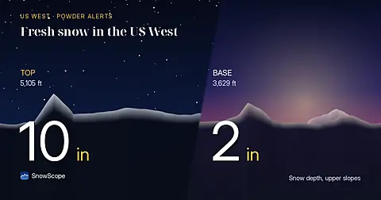

Ski Cooper near Leadville: a $49 weekday in December
Ski Cooper, perched above 10,500 ft (3,200 m) near Leadville, keeps its adult weekday pass at $49 through December—the lowest price in the region. Snow here builds steadily as winter progresses, reaching skiable depths by mid-month even in lean years.
See the live snow forecast for Ski Cooper in the SnowScope appSnow depth, powder alerts and the 3D map, free.
High ground, early snow
Cooper's 5 lifts climb from 10,580 ft (3,226 m) base to 11,740 ft (3,579 m) summit across about 20 mi (32 km) of terrain. This height has a payoff: lasting snow arrives in the first week of October at mid-mountain, almost a month ahead of lower resorts. By mid-November the peak already holds a trace of snow.
Early season snow is thin everywhere at Cooper, but the higher you ride, the better it sticks. The top receives slightly more than mid-mountain, and the base lags behind both. This matters if you are choosing which lifts to use on thin-cover days.

December builds fast here
Cooper's real strength shows in December. On a typical 1 December, mid-mountain (11,160 ft / 3,402 m) has only 18 in (46 cm). By the 15th that jumps to 26 in (66 cm), and by Christmas Day it reaches 31 in (79 cm). The top gains a little more at each milestone.
The odds are strong. By mid-December, 70 % of winters in our 46-year record had 20 in (50 cm) or more at mid-mountain. By Christmas, 80 % did. Even in a lean winter—the type that occurs one year in ten—mid-mountain still averages 29 in (74 cm) by mid-December, enough to ski groomed trails safely.

The $49 weekday advantage
For the 2026-27 season, Ski Cooper holds its prices at last year's levels. An adult day ticket (ages 22-68) costs $49 Monday through Friday outside holidays, and $99 on weekends and holidays. No other Colorado resort near this altitude matches that weekday rate.
The strategy is simple: ski Cooper on a weekday in December and your lift ticket becomes the cheapest on the Front Range. Weekend traffic also stays lighter, which matters on a small hill with five lifts.
How it compares: Loveland and Vail
Loveland, Cooper's main local rival, also sits high (11,780 ft mid-mountain / 3,592 m) and builds similar December snow: typically 29 in (74 cm) by mid-December. But Loveland costs more. Through December 13, online tickets are $60 and window prices are $119. After that, the window price jumps to $159, with limited advance discounts. Cooper's $49 weekday pass beats Loveland's pricing all month.
Vail, the region's largest resort, sits lower (9,810 ft mid-mountain / 2,989 m) and receives less snow: typically 24 in (62 cm) by mid-December. For early-season skiers choosing on altitude alone, Cooper's height gives it an edge over Vail in December.
Winters have thinned slightly
Cooper shows a long-term shift worth noting. In the first 15 winters of our record (1980-81 to 1994-95), the typical mid-mountain depth on 15 December was 26 in (66 cm), with 80 % of winters above 20 in (50 cm). In the most recent 15 winters (2011-12 to 2025-26), those figures fell to 24 in (60 cm) and 53 %. Last winter delivered only 16 in (42 cm) on that date.
The trend is real but gradual. Cooper remains skiable on a typical mid-December day by any historical standard. The shift simply means that early-season snow cover is less guaranteed than it once was, so plan travel for mid-December or later if snow depth matters to your trip.
Logistics and cold
Leadville sits at 10,152 ft (3,094 m)—already high enough to cause altitude effects. If you are flying in from sea level, sleep a night in town before skiing hard. Tennessee Pass (US-24), the main approach from the Front Range, can turn icy and windy in winter; carry chains and check conditions before you leave.
Early season cold is real here. December mornings can drop to -10 °F (-23 °C) or lower. Bring warmer layers than you expect to need, and watch for wind chill on the summit. The reward is riding high, early in the season, at a price that makes the trip affordable.
Tips for skiers
- Book your weekday visit for mid-December or later to maximize snow depth while holding the $49 ticket price.
- Ride the mid-mountain and summit lifts; skip the base early in the season when rocks may show through thin cover.
- Sleep a night in Leadville before skiing to adjust to 10,500+ ft altitude; dehydration and exhaustion come fast at this height.
- Carry tire chains for Tennessee Pass and check road reports before driving from the Front Range in winter.
- Pack cold-weather layers: early-season wind chill at 11,700 ft can be severe even when temperatures look mild at lower elevations. Check the Colorado Avalanche Information Center bulletin if you plan to ski off-piste: https://avalanche.state.co.us/
About these numbers
Resort snow depths are the deepest snow on the resort's upper slopes on the date shown; they are estimates for an area, not a measurement at one point. Forecasts can change. Always read the official avalanche bulletin before going off-piste.
Official avalanche bulletins: Colorado Avalanche Information Center
Cite this report
For research, teaching or the press: the numbers and charts are free to reuse under CC BY 4.0 with this citation.
SnowScope (2026), Ski Cooper near Leadville: a $49 weekday in December, https://snowscope.app/blog/en/2026/11/ski-cooper-leadville-december-49-dollar-weekday.html, accessed 2026-11-15
SnowScope (Atlas Labs). (2026, November 15). Ski Cooper near Leadville: a $49 weekday in December. SnowScope snow reports. https://snowscope.app/blog/en/2026/11/ski-cooper-leadville-december-49-dollar-weekday.html
BibTeX
@misc{snowscope2026skicooperleadvilledecemb,
author = {{SnowScope (Atlas Labs)}},
title = {Ski Cooper near Leadville: a $49 weekday in December},
year = {2026},
month = nov,
howpublished = {\url{https://snowscope.app/blog/en/2026/11/ski-cooper-leadville-december-49-dollar-weekday.html}},
note = {Published 2026-11-15 09:34 UTC; accessed 2026-11-15}
}· CC BY 4.0 · Methods, data and tools →
Ski Cooper: snow and temperature by height, this winter vs last (tools) →
Follow Ski Cooper
Free: a message when fresh snow is coming, and the forecast every morning.
More snow reports

Mt Baker's mid-slopes match the historical snow depth for this date, with fresh powder concentrated in the northern Cascades and Colorado high country.

Mt Baker got 11 in (27 cm) of new snow in the last 72 hours, 4 in (11 cm) of it in the last 24 hours. It now has about 19 in (47 cm) on its upper …

16 US ski areas ranked by December 15 snow odds and adult day-ticket price. Grand Targhee leads at 100% odds; five areas combine over 80% odds with tickets under $80. Data from 13 November 2026.